Clase 1 Introducción
1.1 ¿Qué es aprendizaje de máquina (machine learning)?
Métodos computacionales para aprender de datos con el fin de producir reglas para mejorar el desempeño en alguna tarea o toma de decisión.
En este curso nos enfocamos en las tareas de aprendizaje supervisado (predecir o estimar una variable respuesta a partir de datos de entrada) y aprendizaje no supervisado (describir estructuras interesantes en datos, donde no necesariamente hay una respuesta que predecir).
Ejemplos de tareas de aprendizaje:
- Predecir si un cliente de tarjeta de crédito va a caer en impago en los próximos tres meses.
- Reconocer palabras escritas a mano (OCR).
- Detectar llamados de ballenas en grabaciones de boyas.
- Estimar el ingreso mensual de un hogar a partir de las características de la vivienda, posesiones y equipamiento y localización geográfica.
- Dividir a los clientes de Netflix según sus gustos.
- Recomendar artículos a clientes de un programa de lealtad o servicio online.
Las razones usuales para intentar resolver estos problemas computacionalmente son diversas:
- Quisiéramos obtener una respuesta barata, rápida, automatizada, y con suficiente precisión. Por ejemplo, reconocer caracteres en una placa de coche de una fotografía se puede hacer por personas, pero eso es lento y costoso. Igual oír cada segundo de grabación de las boyas para saber si hay ballenas o no. Hacer mediciones directas del ingreso de un hogar requiere mucho tiempo y esfuerzo.
- Quisiéramos superar el desempeño actual de los expertos o de reglas simples utilizando datos: por ejemplo, en la decisión de dar o no un préstamo a un solicitante, puede ser posible tomar mejores decisiones con algoritmos que con evaluaciones personales o con reglas simples que toman en cuenta el ingreso mensual, por ejemplo.
- Queremos entender de manera más completa y sistemática el comportamiento de un fenómeno, identificando variables o patrones importantes.
Es posible aproximarse a todos estos problemas usando reglas (por ejemplo, si los pixeles del centro de la imagen están vacíos, entonces es un cero, si el crédito total es mayor al 50% del ingreso anual, declinar el préstamo, etc) Las razones para intentar usar aprendizaje para producir reglas en lugar de intentar construir estas reglas directamente son, por ejemplo:
- Cuando conjuntos de reglas creadas a mano se desempeñan mal (por ejemplo, para otorgar créditos, reconocer caracteres, etc.)
- Reglas creadas a mano pueden ser difíciles de mantener (por ejemplo, un corrector ortográfico.)
Ejemplo: reconocimiento de dígitos escritos a mano
¿Cómo reconocer los siguientes dígitos de manera automática?
En los datos tenemos los valores de cada pixel (los caracteres son imagenes de 16x16 pixeles), y una etiqueta asociada, que es el número que la imagen representa. Podemos ver las imágenes y las etiquetas:
library(dplyr)
library(tidyr)
library(purrr)
library(readr)
zip_train <- read_csv(file = 'datos/zip-train.csv')
muestra_1 <- sample_n(zip_train, 10)
graficar_digitos(muestra_1)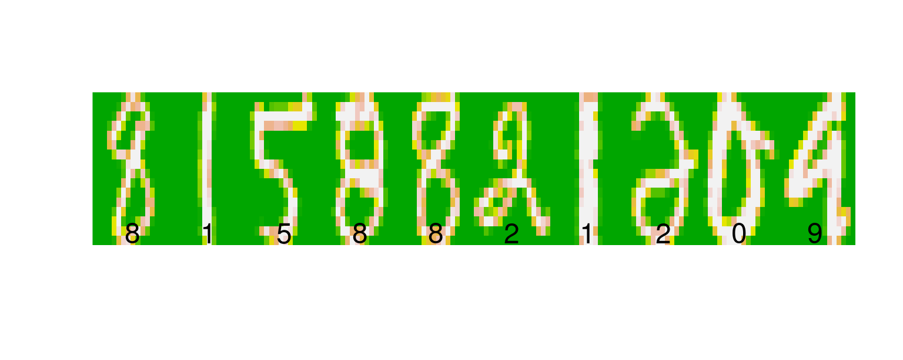
muestra_2 <- sample_n(zip_train, 10)
graficar_digitos(muestra_2)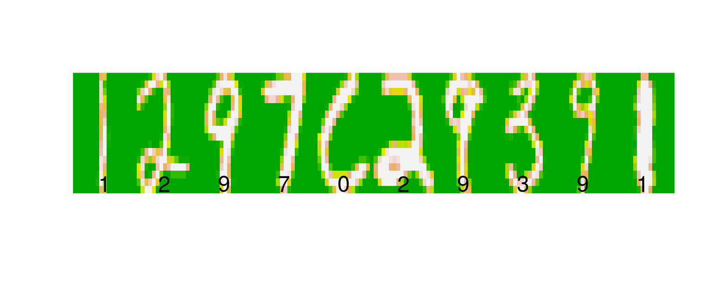
Los 16x16=256 están escritos acomodando las filas de la imagen en vector de 256 valores (cada renglón de zip_train). Un dígito entonces se representa como sigue:
dim(zip_train)## [1] 7291 257as.numeric(zip_train[1,])## [1] 6.000 -1.000 -1.000 -1.000 -1.000 -1.000 -1.000 -1.000 -0.631 0.862
## [11] -0.167 -1.000 -1.000 -1.000 -1.000 -1.000 -1.000 -1.000 -1.000 -1.000
## [21] -1.000 -1.000 -1.000 -0.992 0.297 1.000 0.307 -1.000 -1.000 -1.000
## [31] -1.000 -1.000 -1.000 -1.000 -1.000 -1.000 -1.000 -1.000 -1.000 -0.410
## [41] 1.000 0.986 -0.565 -1.000 -1.000 -1.000 -1.000 -1.000 -1.000 -1.000
## [51] -1.000 -1.000 -1.000 -1.000 -0.683 0.825 1.000 0.562 -1.000 -1.000
## [61] -1.000 -1.000 -1.000 -1.000 -1.000 -1.000 -1.000 -1.000 -1.000 -0.938
## [71] 0.540 1.000 0.778 -0.715 -1.000 -1.000 -1.000 -1.000 -1.000 -1.000
## [81] -1.000 -1.000 -1.000 -1.000 -1.000 0.100 1.000 0.922 -0.439 -1.000
## [91] -1.000 -1.000 -1.000 -1.000 -1.000 -1.000 -1.000 -1.000 -1.000 -1.000
## [101] -0.257 0.950 1.000 -0.162 -1.000 -1.000 -1.000 -0.987 -0.714 -0.832
## [111] -1.000 -1.000 -1.000 -1.000 -1.000 -0.797 0.909 1.000 0.300 -0.961
## [121] -1.000 -1.000 -0.550 0.485 0.996 0.867 0.092 -1.000 -1.000 -1.000
## [131] -1.000 0.278 1.000 0.877 -0.824 -1.000 -0.905 0.145 0.977 1.000
## [141] 1.000 1.000 0.990 -0.745 -1.000 -1.000 -0.950 0.847 1.000 0.327
## [151] -1.000 -1.000 0.355 1.000 0.655 -0.109 -0.185 1.000 0.988 -0.723
## [161] -1.000 -1.000 -0.630 1.000 1.000 0.068 -0.925 0.113 0.960 0.308
## [171] -0.884 -1.000 -0.075 1.000 0.641 -0.995 -1.000 -1.000 -0.677 1.000
## [181] 1.000 0.753 0.341 1.000 0.707 -0.942 -1.000 -1.000 0.545 1.000
## [191] 0.027 -1.000 -1.000 -1.000 -0.903 0.792 1.000 1.000 1.000 1.000
## [201] 0.536 0.184 0.812 0.837 0.978 0.864 -0.630 -1.000 -1.000 -1.000
## [211] -1.000 -0.452 0.828 1.000 1.000 1.000 1.000 1.000 1.000 1.000
## [221] 1.000 0.135 -1.000 -1.000 -1.000 -1.000 -1.000 -1.000 -0.483 0.813
## [231] 1.000 1.000 1.000 1.000 1.000 1.000 0.219 -0.943 -1.000 -1.000
## [241] -1.000 -1.000 -1.000 -1.000 -1.000 -0.974 -0.429 0.304 0.823 1.000
## [251] 0.482 -0.474 -0.991 -1.000 -1.000 -1.000 -1.000- Un enfoque más utilizado anteriormente para resolver este tipo de problemas consistía en procesar estas imágenes con filtros hechos a mano (por ejemplo, calcular cuántos pixeles están prendidos, si existen ciertas curvas o trazos) para después construir reglas para determinar cada dígito. Actualmente, el enfoque más exitoso es utilizar métodos de aprendizaje que aprendan automáticamente esos filtros y esas reglas basadas en filtros (redes convolucionales).
Ejemplo: predecir ingreso trimestral
Consideramos la medición de ingreso total trimestral para una muestra de hogares de la encuesta de ENIGH. Cada una de estas mediciones es muy costosa en tiempo y dinero.
dat_ingreso <- read_csv(file = 'datos/enigh-ejemplo.csv')
ggplot(dat_ingreso, aes(x=INGTOT)) +
geom_histogram(bins = 100) +
scale_x_log10()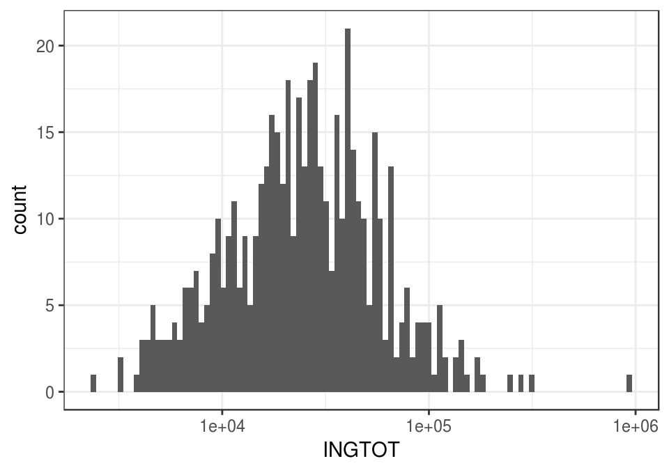
Pero quizá podemos usar otras variables más fácilmente medibles para predecir el ingreso de un hogar. Por ejemplo, si consideramos el número de focos en la vivienda:
ggplot(dat_ingreso, aes(x = FOCOS, y = INGTOT)) +
geom_point() +
scale_y_log10() + xlim(c(0,50))
O el tamaño de la localidad:
ggplot(dat_ingreso, aes(x = tamaño_localidad, y = INGTOT)) +
geom_boxplot() +
scale_y_log10() 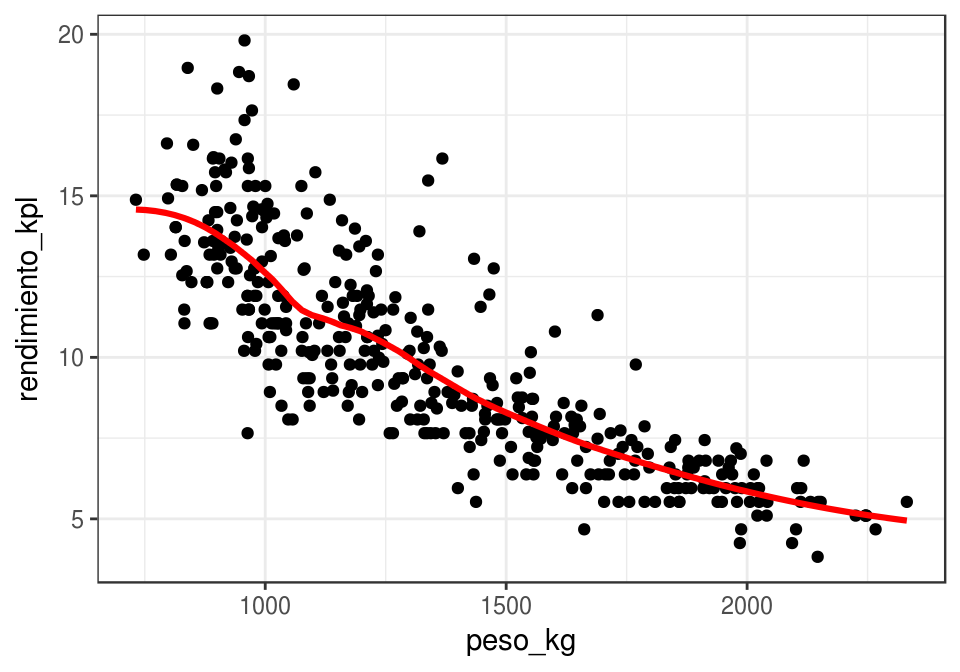
- En algunas encuestas se pregunta directamente el ingreso mensual del hogar. La respuesta es generalmente una mala estimación del verdadero ingreso, por lo que actualmente se prefiere utilizar aprendizaje para estimar a partir de otras variables que son más fielmente reportadas por encuestados (años de estudio, ocupación, número de focos en el hogar, etc.)
Aprendizaje supervisado
Las tareas de aprendizaje se divide en dos grandes partes: aprendizaje supervisado y aprendizaje no supervisado.
- Aprendizaje supervisado Construir un modelo o algoritmo para predecir o estimar un target o una variable de salida a partir de ciertas variables de entrada.
Predecir y estimar, en este contexto, se refieren a cosas similares. Generalmente se usa predecir cuando se trata de variables que no son observables ahora, sino en el futuro, y estimar cuando nos interesan variables actuales que no podemos observar ahora por costos o por la naturaleza del fenómeno.
Por ejemplo, para identificar a los clientes con alto riesgo de impago de tarjeta de crédito, utilizamos datos históricos de clientes que han pagado y no han pagado. Con estos datos entrenamos un algoritmo para detectar anticipadamente los clientes con alto riesgo de impago.
Usualmente dividimos los problemas de aprendizaje supervisado en dos tipos, dependiendo de la variables salida:
- Problemas de regresión: cuando la salida es una variable numérica. El ejemplo de estimación de ingreso es un problema de regresión
- Problemas de clasificación: cuando la salida es una variable categórica. El ejemplo de detección de dígitos escritos a manos es un problema de clasificación.
Ejemplo: predecir el rendimiento de un coche.
Estimar directamente el rendimiento (km por litro de combustible) de un coche es costoso: hay que hacer varias pruebas en diversas condiciones, etc. ¿Podríamos estimar el rendimiento de un coche usando variables más accesibles, peso del coche, año de producción, etc.?
library(ISLR)
datos <- Auto[, c('name', 'weight','year', 'mpg')]
datos$peso_kg <- datos$weight*0.45359237
datos$rendimiento_kpl <- datos$mpg*(1.609344/3.78541178)
set.seed(213)
datos_muestra <- sample_n(datos, 50)
datos_muestra %>% select(name, peso_kg, rendimiento_kpl)## name peso_kg rendimiento_kpl
## 9 pontiac catalina 2007.1462 5.952012
## 139 dodge coronet custom (sw) 2021.6612 5.952012
## 248 datsun b210 gx 938.9362 16.750662
## 229 ford granada 1598.9131 7.865159
## 166 chevrolet monza 2+2 1461.0210 8.502874
## 321 datsun 510 hatchback 1104.0438 15.730317
## 5 ford torino 1564.4401 7.227443
## 145 toyota corona 747.9738 13.179455
## 282 mercury zephyr 6 1356.2412 8.417845
## 297 amc spirit dl 1211.0916 11.648938
## 19 datsun pl510 966.1517 11.478880
## 320 mazda 626 1153.0318 13.306998
## 218 buick opel isuzu deluxe 977.4916 12.754311
## 1 chevrolet chevelle malibu 1589.3877 7.652587
## 195 amc hornet 1399.3325 9.565733
## 317 dodge aspen 1533.5958 8.120245
## 35 plymouth satellite custom 1559.9042 6.802299
## 356 honda prelude 1002.4391 14.327343
## 250 oldsmobile cutlass salon brougham 1526.3383 8.460360
## 373 pontiac phoenix 1240.5751 11.478880
## 80 renault 12 (sw) 992.9137 11.053736
## 201 ford granada ghia 1621.1391 7.652587
## 202 pontiac ventura sj 1653.3442 7.865159
## 59 dodge colt hardtop 964.3374 10.628593
## 277 saab 99gle 1267.7907 9.183104
## 108 amc gremlin 1265.0691 7.652587
## 329 mercedes-benz 240d 1474.1752 12.754311
## 220 plymouth arrow gs 1043.2625 10.841165
## 209 plymouth volare premier v8 1787.1539 5.526868
## 263 chevrolet monte carlo landau 1553.5539 8.162759
## 178 audi 100ls 1221.9778 9.778305
## 182 honda civic cvcc 814.1983 14.029742
## 16 plymouth duster 1285.0272 9.353162
## 191 ford gran torino 1911.8918 6.164584
## 113 ford pinto 1047.7984 8.077730
## 285 dodge aspen 6 1524.0704 8.757960
## 49 ford mustang 1423.8264 7.652587
## 243 bmw 320i 1179.3402 9.140590
## 271 toyota celica gt liftback 1140.7848 8.970532
## 349 toyota tercel 929.8644 16.027918
## 339 plymouth reliant 1129.4450 11.563909
## 309 pontiac phoenix 1159.3821 14.242314
## 345 plymouth champ 850.4857 16.580605
## 91 mercury marquis brougham 2246.1894 5.101724
## 275 audi 5000 1283.6664 8.630417
## 46 amc hornet sportabout (sw) 1343.5406 7.652587
## 255 ford fairmont (auto) 1344.9014 8.587903
## 7 chevrolet impala 1974.9412 5.952012
## 378 plymouth horizon miser 963.8838 16.155461
## 6 ford galaxie 500 1969.0445 6.377156Y podríamos comenzar graficando rendimiento contra peso. Cada punto representa un coche distinto. En esta gráfica vemos que los valores de rendimiento varían según según peso de una manera sistemática: cuanto más grande es el peso, más bajo es el rendimiento:
library(ggplot2)
ggplot(datos_muestra,
aes(x=peso_kg, y=rendimiento_kpl)) +
geom_point() 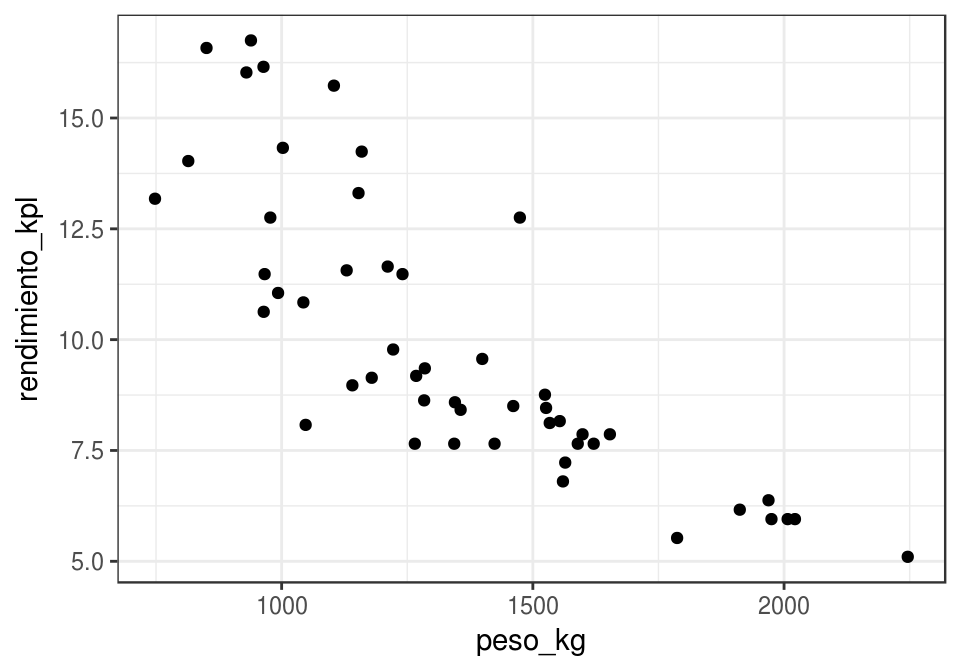
Podemos entonces ajustar una curva, que para cada nivel de peso da un valor de rendimiento que se ‘aleja lo menos posible’ de los valores de rendimiento cercanos. Por ejemplo: según la curva roja, ¿cómo haríamos la predicción para un peso de 1500 kg?
ggplot(datos_muestra,
aes(x=peso_kg, y=rendimiento_kpl)) + geom_point() +
geom_smooth(se =FALSE, colour='red', size=1.1,
span=0.4, method='loess') +
geom_smooth(se =FALSE, colour='gray', size=1.1,
span=2, method='loess')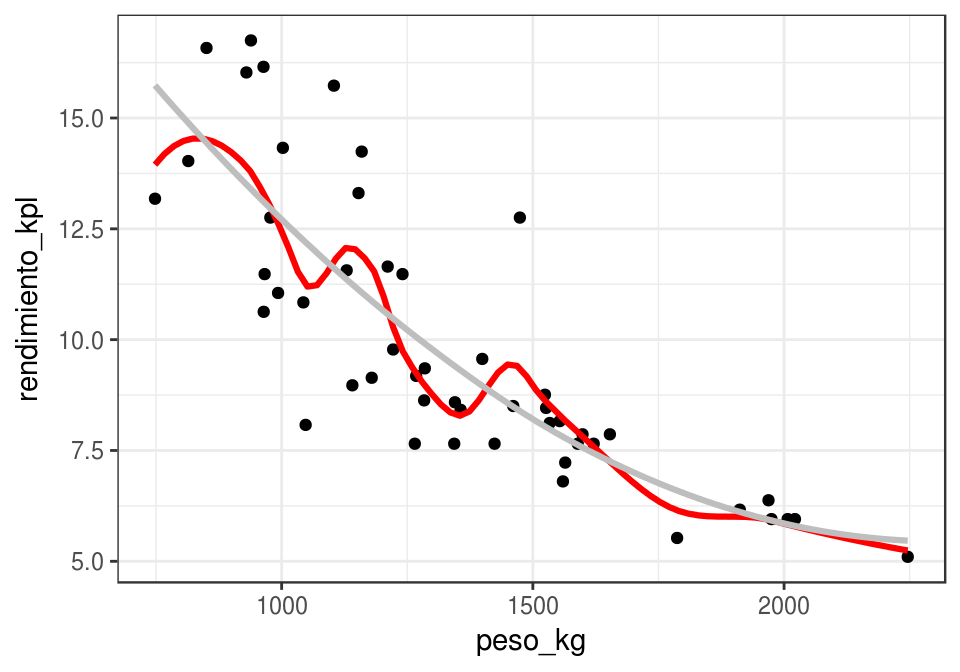
Aprendizaje no supervisado
- Aprendizaje no supervisado En este caso no hay target o variable salida. Buscamos modelar y entender las relaciones entre variables y entre observaciones, o patrones importantes o interesantes en los datos.
Los problemas supervisados tienen un objetivo claro: hacer las mejores predicciones posibles bajo ciertas restricciones. Los problemas no supervisados tienden a tener objetivos más vagos, y por lo mismo pueden ser más difíciles.
Ejemplo: tipos de coches en el mercado
Quisieramos encontrar categorías de coches tales que: las categorías son diferentes entre sí, y los coches en una misma categoría son similares entre sí. Esta agrupación nos permite entender la estructura general de los datos, cómo están organizados en términos de similitud de características.
En este ejemplo, encontramos un plano de máxima variabilidad donde proyectamos los coches, y después formamos grupos de coches similares:
autos <- Auto %>% select(mpg, displacement, horsepower, acceleration)
comps_autos <- princomp(autos, cor = TRUE)
clust <- hclust(dist(comps_autos$scores[,1:2]), method = 'ward.D')
autos$grupo <- cutree(clust, k = 4)
autos$Comp.1 <- comps_autos$scores[,1]
autos$Comp.2 <- comps_autos$scores[,2]
autos$nombre <- Auto$name
ggplot(autos, aes(x=Comp.1, y=Comp.2, colour=factor(grupo), label=nombre)) +
geom_point() 
¿Cómo interpretamos los grupos?
head(filter(autos, grupo==1))## mpg displacement horsepower acceleration grupo Comp.1 Comp.2
## 1 18 307 130 12.0 1 -1.817719 -0.5042535
## 2 15 350 165 11.5 1 -2.800712 -0.3938195
## 3 18 318 150 11.0 1 -2.310357 -0.7966085
## 4 16 304 150 12.0 1 -2.213807 -0.3989781
## 5 17 302 140 10.5 1 -2.225309 -0.9183779
## 6 15 429 198 10.0 1 -3.900596 -0.6915313
## nombre
## 1 chevrolet chevelle malibu
## 2 buick skylark 320
## 3 plymouth satellite
## 4 amc rebel sst
## 5 ford torino
## 6 ford galaxie 500head(filter(autos, grupo==3))## mpg displacement horsepower acceleration grupo Comp.1 Comp.2
## 1 22 198 95 15.5 3 0.01913364 0.090471378
## 2 18 199 97 15.5 3 -0.26705470 0.339015545
## 3 21 200 85 16.0 3 0.16412490 0.315611651
## 4 21 199 90 15.0 3 -0.05362631 0.004579963
## 5 19 232 100 13.0 3 -0.79359758 -0.413938751
## 6 16 225 105 15.5 3 -0.63973365 0.517394423
## nombre
## 1 plymouth duster
## 2 amc hornet
## 3 ford maverick
## 4 amc gremlin
## 5 amc gremlin
## 6 plymouth satellite customhead(filter(autos, grupo==2))## mpg displacement horsepower acceleration grupo Comp.1 Comp.2
## 1 24 113 95 15.0 2 0.50234800 -0.3800473
## 2 27 97 88 14.5 2 0.79722704 -0.7509781
## 3 24 107 90 14.5 2 0.52837050 -0.5437610
## 4 26 121 113 12.5 2 -0.04757934 -1.2605758
## 5 27 97 88 14.5 2 0.79722704 -0.7509781
## 6 28 140 90 15.5 2 0.76454526 -0.4100595
## nombre
## 1 toyota corona mark ii
## 2 datsun pl510
## 3 audi 100 ls
## 4 bmw 2002
## 5 datsun pl510
## 6 chevrolet vega 2300head(filter(autos, grupo==4))## mpg displacement horsepower acceleration grupo Comp.1 Comp.2
## 1 26 97 46 20.5 4 2.2421696 1.1703377
## 2 25 110 87 17.5 4 1.0737328 0.3205227
## 3 25 104 95 17.5 4 0.9902507 0.3021997
## 4 22 140 72 19.0 4 1.1727317 1.0419917
## 5 30 79 70 19.5 4 2.0927389 0.5620939
## 6 31 71 65 19.0 4 2.1920905 0.3319627
## nombre
## 1 volkswagen 1131 deluxe sedan
## 2 peugeot 504
## 3 saab 99e
## 4 chevrolet vega (sw)
## 5 peugeot 304
## 6 toyota corolla 12001.2 Aprendizaje Supervisado
Por el momento nos concentramos en problemas supervisados de regresión, es decir predicción de variables numéricas.
¿Cómo entendemos el problema de predicción?
1.2.1 Proceso generador de datos (modelo teórico)
Para entender lo que estamos intentando hacer, pensaremos en términos de modelos probabilísticos que generan los datos. La idea es que estos representan los procesos que generan los datos o las observaciones.
Si \(Y\) es la respuesta que queremos predecir, y \(X\) es una entrada que queremos usar para predecir \(Y\),
consideramos que las variables aleatorias \(Y\) y \(X\) están relacionadas como sigue: \[Y=f(X)+\epsilon,\] donde \(\epsilon\) es una término de error aleatorio que no depende de \(X\), y que tiene valor esperado \(\textrm{E}(\epsilon)=0\).
- \(f\) expresa la relación sistemática que hay entre \(Y\) y \(X\): para cada valor posible de \(X\), la
contribuciónde \(X\) a \(Y\) es \(f(X)\). - Pero \(X\) no determina a \(Y\), como en el ejemplo anterior de rendimiento de coches. Entonces agregamos una error aleatorio \(\epsilon\), con media cero (si la media no es cero podemos agregar una constante a \(f\)), que no contiene información acerca de \(X\) (independiente de \(X\)).
- \(\epsilon\) representa, por ejemplo, el efecto de variables que no hemos medido o procesos aleatorios que determinan la respuesta.
Ejemplo
Vamos a usar simulación para entender estas ideas: supongamos que \(X\) es el número de años de estudio de una persona y \(Y\) es su ingreso mensual. En primer lugar, estas son el número de años de estudio de 8 personas:
x <- c(1,7,10,0,0,5,9,13,2,4,17,18,1,2)Ahora supondremos que la dependencia de Y de X está dada por \(Y=f(X)+\epsilon\) por una función \(f\) que no conocemos (esta función está determinada por el fenómeno)
f <- function(x){
ifelse(x < 10, 1000*sqrt(x), 1000*sqrt(10))
}El ingreso no se determina únicamente por número de años de estudio. Suponemos entonces que hay algunas variables adicional que perturba los niveles de \(f(X)\) por una cantidad aleatoria. Los valores que observamos de \(Y\) están dados entonces por \(Y=f(X)+\epsilon\).
Entonces podríamos obtener, por ejemplo:
x_g <- seq(0,20,0.5)
y_g <- f(x_g)
dat_g <- data.frame(x = x_g, y = y_g)
set.seed(281)
error <- rnorm(length(x), 0, 500)
y <- f(x) + error
datos <- data_frame(x = x, y = y)
datos$y_media <- f(datos$x)
ggplot(datos, aes(x = x, y = y)) + geom_point() +
geom_line(data=dat_g, colour = 'blue', size = 1.1) +
geom_segment(aes(x = x, xend = x, y = y, yend = y_media), col='red')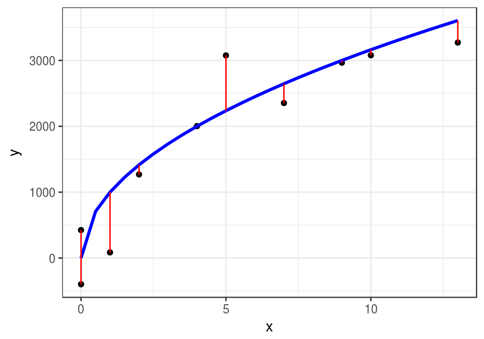
En problemas de aprendizaje nunca conocemos esta \(f\) verdadera, aunque quizá sabemos algo acerca de sus propiedades (por ejemplo, continua, de variación suave). Lo que tenemos son los datos, que también podrían haber resultado en (para otra muestra de personas, por ejemplo):
set.seed(28015)
error <- rnorm(length(x), 0, 500)
y <- f(x) + error
datos <- data.frame(x = x, y = y)
ggplot(datos, aes(x = x, y = y)) + geom_point() 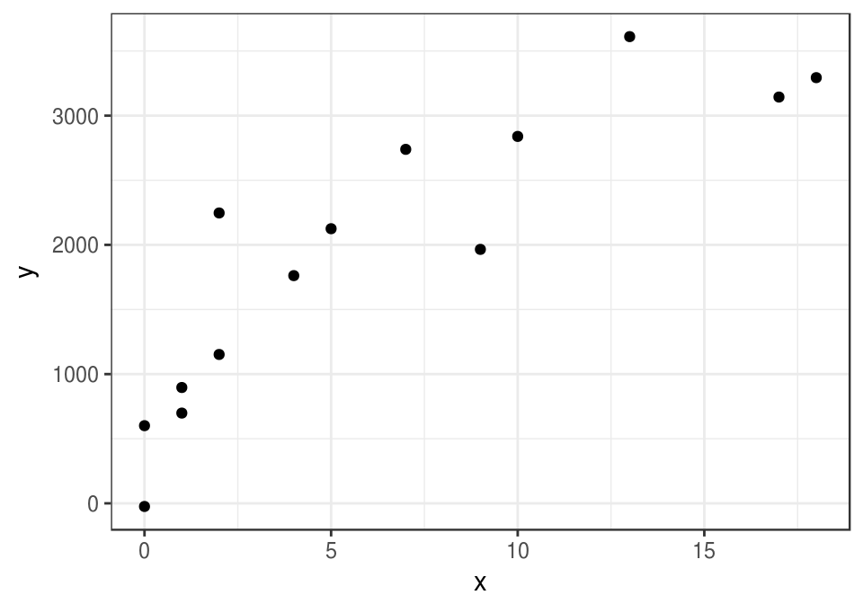
La siguiente observación nos da una idea de lo que intentamos hacer, aunque todavía es vaga y requiere refinamiento:
Bajo los supuestos del modelo Y = f(X)+ϵ, aprender de los datos significa intentar recuperar o estimar la forma de la función f que no conocemos. f representa la relación sistemática entre Y y X.
¿Qué tan bien podemos estimar esa \(f\) que no conocemos, con los datos disponibles? ¿Qué significa estimar bien? Incluso este ejemplo tan simple muestra las dificultades que vamos a enfrentar, y la importancia de determinar con cuidado qué tanta información tenemos, y qué tan buenas pueden ser nuestras predicciones.
1.3 Predicciones
La idea es entonces producir una estimación de f que nos permita hacer predicciones.
Si denotamos por \(\hat{f}\) a una estimación de \(f\) construida a partir de los datos, podemos hacer predicciones aplicando \(\hat{f}\) a valores de \(X\). La predicción de Y la denotamos por \(\hat{Y}\), y \[\hat{Y}=\hat{f}(X).\] El error de predicción (residual) está dado por el valor observado menos la predicción: \[Y-\hat{Y}.\]
En nuestro ejemplo anterior, podríamos construir, por ejemplo, una recta ajustada por mínimos cuadrados:
curva_1 <- geom_smooth(data=datos,
method = "lm", se=FALSE, color="red", formula = y ~ x, size = 1.1)ggplot(datos, aes(x = x, y = y)) + geom_point() + curva_1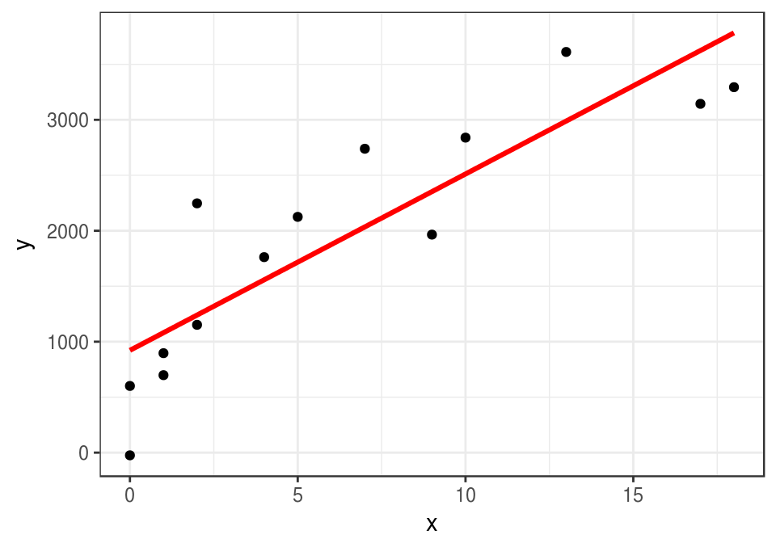
En este caso \(\hat{f}\) es una recta, y la podemos usar para hacer predicciones. Por ejemplo, si tenemos una observación con \(x_0=8\) años de estudio, nuestra predicción del ingreso \(\hat{y}=\hat{f}(8)\) sería
lineal <- lm(y ~ x,data = datos)
pred_1 <- predict(lineal, newdata = data.frame(x=8))
pred_1## 1
## 2193.561ggplot(datos, aes(x = x, y = y)) + geom_point() + curva_1 +
geom_segment(x = 0, xend = 8, y = pred_1, yend = pred_1, colour = 'salmon') +
geom_segment(x = 8, xend = 8, y = 0, yend = pred_1, colour = 'salmon') +
annotate('text', x = 0.5, y = pred_1 + 100, label = round(pred_1, 1)) +
geom_point( x= 8, y =3200, col='green', size = 4)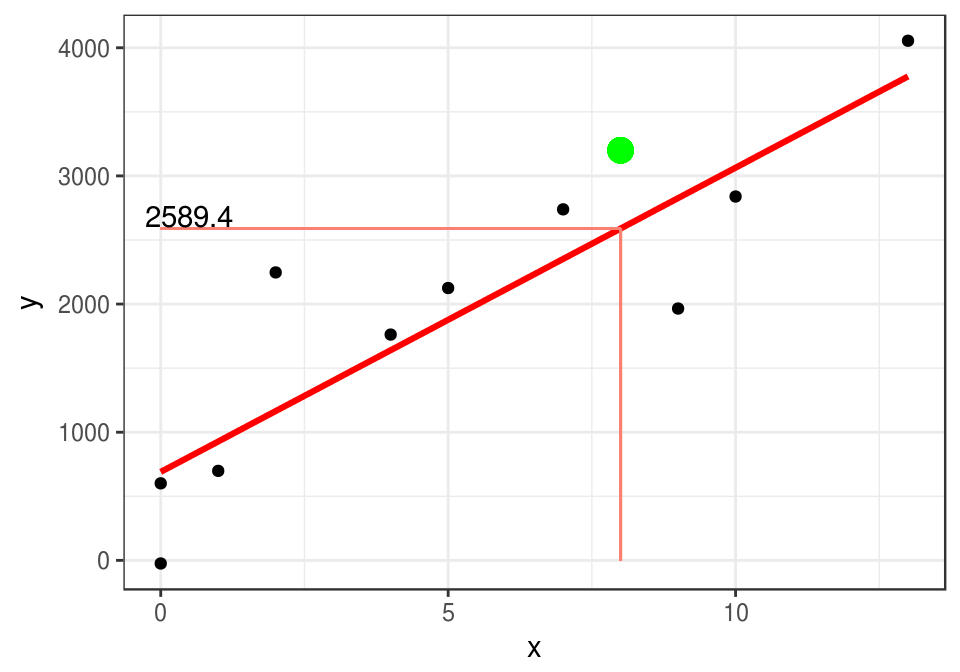
Si observamos que para esta observación con \(x_0=8\), resulta que el correspondiente ingreso es \(y_0=3200\), entonces el error sería
y_0 <- 3200
y_0 - pred_1## 1
## 1006.439En aprendizaje buscamos que estos errores sean lo más cercano a cero que sea posible.
1.4 Cuantificación de error o precisión
El elemento faltante para definir la tarea de aprendizaje supervisado es qué significa aproximar bien a \(f\), o tener predicciones precisas. Para esto definimos una función de pérdida:
\[L(Y, \hat{f}(X)),\]
que nos dice cuánto nos cuesta hacer la predicción \(\hat{f}(X)\) cuando el verdadero valor es \(Y\) y las variables de entrada son \(X\). Una opción conveniente para problemas de regresión es la pérdida cuadrática:
\[L(Y, \hat{f}(X)) = (Y - \hat{f}(X))^2\] Esta es una cantidad aleatoria, de modo que en algunos casos este error puede ser más grande o más chico. Usualmente buscamos una \(\hat{f}\) de modo que el error promedio sea chico:
\[Err = E (Y - \hat{f}(X))^2 \]
Nota: Intenta demostrar que bajo error cuadrático medio y suponiendo el modelo aditivo \(Y=f(X)+\epsilon\), el mejor predictor de \(Y\) es \(f(x)= E[Y|X=x]\). Es decir: lo que nos interesa es aproximar lo mejor que se pueda la esperanza condicional
1.5 Tarea de aprendizaje supervisado
Ahora tenemos los elementos para definir con precisión el problema de aprendizaje supervisado.
Consideramos un proceso generador de datos \((X,Y)\). En primer lugar, tenemos datos de los que vamos a aprender.
Supongamos que tenemos un conjunto de datos etiquetados (generados según \((X,Y)\))
\[{\mathcal L}=\{ (x^{(1)},y^{(1)}),(x^{(2)},y^{(2)}), \ldots, (x^{(N)}, y^{(N)}) \}\] que llamamos conjunto de entrenamiento. Nótese que usamos minúsculas para denotar observaciones particulares de \((X,Y)\).
Un algoritmo de aprendizaje es una regla que asigna a cada conjunto de entrenamiento \({\mathcal L}\) una función \(\hat{f}\):
\[{\mathcal L} \to \hat{f}.\] El desempeño del predictor particular \(\hat{f}\) se mide como sigue: si en el futuro observamos otra muestra \({\mathcal T}\) (que podemos llamar muestra de prueba)
\[{\mathcal T}=\{ (x_0^{(1)},y_0^{(1)}),(x_0^{(2)},y_0^{(2)}), \ldots, (x_0^{(m)}, y_0^{(m)}) \}\]
entonces decimos que el error de predicción (cuadrático) de \(\hat{f}\) para el ejemplo \((x_0^{(j)},y_0^{(j)})\) está dado por \[(y_0^{(j)} - \hat{f}(x_0^{(j)}))^2\]
y el error sobre la muestra \({\mathcal T}\) es
\[\hat{Err} = \frac{1}{m}\sum_{j=1}^m (y_0^{(j)} - \hat{f}(x_0^{(j)}))^2\]
Es muy importante considerar dos muestras separadas en esta definición:
No tiene mucho sentido medir el desempeño de nuestro algoritmo sobre la muestra de entrenamiento, pues el algoritmo puede ver las etiquetas.
Considerar el error sobre una muestra diferente a la de entrenamiento nos permite evaluar si nuestro algoritmo generaliza, que se puede pensar como “verdadero” aprendizaje.
Nótese que \(\hat{Err}\) es una estimación de \(Err\) (por la ley de los grandes números, si \({\mathcal T}\) es muestra i.i.d. de \((X,Y)\)).
También consideramos el error de entrenamiento, dado por
\[\overline{err} = \frac{1}{N}\sum_{i=1}^N (y^{(i)} - \hat{f}(x^{(i)}))^2\] - Pregunta: ¿Por qué \(\overline{err}\) no necesariamente es una buena estimación de \(Err\)?
1.5.0.1 Ejemplo
En el ejemplo que hemos estado usando, ¿que curva preferirías para predecir, la gris, la roja o la azul? ¿Cuál tiene menor error de entrenamiento?
set.seed(280572)
error <- rnorm(length(x), 0, 500)
y <- f(x) + error
datos_entrena <- data.frame(x=x, y=y)
head(datos_entrena)## x y
## 1 1 86.22033
## 2 7 2353.75863
## 3 10 3078.71029
## 4 0 -397.80229
## 5 0 424.73363
## 6 5 3075.92998curva.1 <- geom_smooth(data=datos_entrena,
method = "loess", se=FALSE, color="gray", span=1, size=1.1)
curva.2 <- geom_smooth(data=datos_entrena,
method = "loess", se=FALSE, color="red", span=0.3, size=1.1)
curva.3 <- geom_smooth(data=datos_entrena,
method = "lm", se=FALSE, color="blue", size=1.1)ggplot(datos_entrena, aes(x=x, y=y)) + geom_point() + curva.1 + curva.2 + curva.3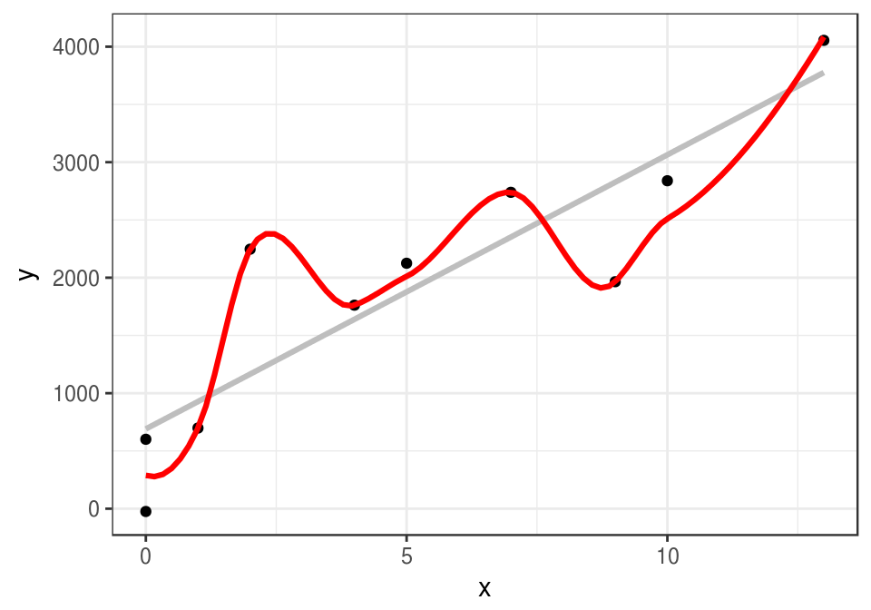
Calculamos los errores de entrenamiento de cada curva:
mod_rojo <- loess(y ~ x, data = datos_entrena, span=0.3)
mod_gris <- loess(y ~ x, data = datos_entrena, span=1)
mod_recta <- lm(y ~ x, data = datos_entrena)
df_mods <- data_frame(nombre = c('recta', 'rojo','gris'))
df_mods$modelo <- list(mod_recta, mod_rojo, mod_gris)error_f <- function(df){
function(mod){
preds <- predict(mod, newdata = df)
round(sqrt(mean((preds-df$y)^2)))
}
}
error_ent <- error_f(datos_entrena)
df_mods <- df_mods %>%
mutate(error_entrena = map_dbl(modelo, error_ent))
df_mods## # A tibble: 3 x 3
## nombre modelo error_entrena
## <chr> <list> <dbl>
## 1 recta <S3: lm> 782
## 2 rojo <S3: loess> 189
## 3 gris <S3: loess> 389El error de entrenamiento es considerablemente menor para la curva roja, y es más grande para la recta.
Sin embargo, consideremos que tenemos una nueva muestra (de prueba).
set.seed(218052272)
x_0 <- sample(0:13, 100, replace = T)
error <- rnorm(length(x_0), 0, 500)
y_0 <- f(x_0) + error
datos_prueba <- data_frame(x = x_0, y = y_0)
datos_prueba## # A tibble: 100 x 2
## x y
## <int> <dbl>
## 1 9 2156.1160
## 2 11 3227.0968
## 3 3 2382.2805
## 4 10 3481.5850
## 5 7 2732.8020
## 6 7 2325.9217
## 7 12 3463.7795
## 8 0 -563.9233
## 9 10 3295.5705
## 10 0 365.9880
## # ... with 90 more rowserror_p <- error_f(datos_prueba)
df_mods <- df_mods %>%
mutate(error_prueba = map_dbl(modelo, error_p))
df_mods## # A tibble: 3 x 4
## nombre modelo error_entrena error_prueba
## <chr> <list> <dbl> <dbl>
## 1 recta <S3: lm> 782 801
## 2 rojo <S3: loess> 189 628
## 3 gris <S3: loess> 389 5201.5.1 Observaciones
El mejor modelo entrenamiento es uno que “sobreajusta” a los datos, pero es el peor con una muestra de prueba. La curva roja aprende del una componente de ruido del modelo - lo cual realmente no es aprendizaje.
El modelo de la recta no es bueno en entrenamiento ni en prueba. Este modelo no tiene la capacidad para aprender de la señal en los datos.
El mejor modelo en la muestra de prueba es uno que está entre la recta y la curva roja en términos de flexibilidad.
Nuestra intuición para escoger el modelo gris desde el principio se refleja en que generaliza mejor que los otros, y eso a su vez se refleja en un error de prueba más bajo.
1.6 ¿Por qué tenemos errores?
¿De dónde provienen los errores en la predicción? Si establemos que el error es una función creciente de \(Y-\hat{Y}\), vemos que \[ Y-\hat{Y} = f(X) + \epsilon - \hat{f}(X)= (f(X) - \hat{f}(X)) + \epsilon,\] donde vemos que hay dos componentes que pueden hacer grande a \(Y-\hat{Y}\):
- La diferencia \(f(X) - \hat{f}(X)\) está asociada a error reducible, pues depende de qué tan bien estimemos \(f(X)\) con \(\hat{f}(X)\)
- El error aleatorio \(\epsilon\), asociado a error irreducible.
Cualquiera de estas dos cantidades pueden hacer que nuestras predicciones no sean precisas.
En nuestro ejemplo anterior, el error reducible:
- Es grande para el modelo rojo, pues responde demasiado fuerte a ruido en los datos (tiene varianza alta).
- Es grande para el modelo de la recta, pues no tiene capacidad para acercarse a la verdadera curva (está sesgado).
En aprendizaje supervisado, nuestro objetivo es reducir el error reducible tanto como sea posible (obtener la mejor estimación de f). No podemos hacer nada acerca del error irreducible, pues este se debe a aleatoriedad en el fenómeno o a variables que no conocemos.
Notación
Las observaciones o datos que usaremos para construir nuestras estimaciones las denotamos como sigue.
Cada {} (o caso, o ejemplo) está dada por un el valor de una variable de entrada \(X\) y un valor de la variable de salida \(Y\). Cuando tenemos \(N\) ejemplos de entrenamiento, los escribimos como los pares \[(x^{(1)},y^{(1)}), (x^{(2)},y^{(2)}) \ldots, (x^{(N)},y^{(N)})\]. Cuando los datos de entrada contienen \(p\) variables o atributos, escribimos \[x^{(i)} = (x_1^{(i)}, x_2^{(i)},\ldots, x_p^{(i)})\]
Escribimos también la matriz de entradas de dimensión Nxp: \[\underline{X} = \left ( \begin{array}{cccc} x_1^{(1)} & x_2^{(1)} & \ldots & x_p^{(1)} \\ x_1^{(2)} & x_2^{(2)} & \ldots & x_p^{(2)}\\ \vdots & \vdots & & \vdots \\ x_1^{(N)} & x_2^{(N)} & \ldots & x_p^{(N)} \\ \end{array} \right)\] y \[\underline{y} =(y^{(1)},y^{(2)}, \ldots, y^{(N)})^t.\]
Adicionalmente, usamos la notación
\[{\mathcal L}=\{ (x^{(1)},y^{(1)}), (x^{(2)},y^{(2)}), \ldots, (x^{(N)},y^{(N)}) \}\]
para denotar al conjunto de datos con los que construimos nuestro modelo. A este conjunto le llamaremos {} (learning set)
1.7 ¿Cómo estimar f?
Los métodos para construir la estimación \(\hat{f}\) se dividen en dos grandes grupos: paramétricos y no paramétricos.
1.7.0.1 Métodos paramétricos
En los métodos paramétricos seleccionamos, usando los datos, una \(\hat{f}\) de una colección de modelos que pueden ser descritos por un número fijo de parámetros. Por ejemplo, podríamos establecer que la función \(f\) tiene la forma:
\[f(x_1,x_2) = \beta_0 + \beta_1 x_1 + \beta_2 x_2,\]
que son funciones lineales en dos variables. En este caso, tenemos tres parámetros \((\beta_0,\beta_1,\beta_2)\), que describen a la familia completa.
Usando los datos de entrenamiento, entrenamos este modelo para encontrar \((\beta_0,\beta_1,\beta_2)\) tales que
\[y^{(i)} \approx \beta_0 + \beta_1 x_1^{(i)} + \beta_2 x_2^{(i)},\] es decir, el modelo ajustado regresa valores cercanos a los observados. Esta aproximación se traducirá en un problema de optimización.
En general, este enfoque es muy tratable numéricamente pues el problema se reduce a estimar tres valores numéricos, en lugar de intentar estimar una función \(f\) arbitraria. Su desventaja es que quizá ningún miembro familia de modelos establecida (por ejemplo, modelos lineales) puede aproximar razonablemente bien a la verdadera función \(f\). Es decir, estos métodos tienen {} potencial grande. Por ejemplo:
mod_1 <- lm(mpg~year+weight, data=Auto)
Auto$fit <- predict(mod_1)
weight <- seq(1600, 5200, by=100)
year <- seq(70,82, by=1)
z <- outer(weight, year, function(x,y){ predict(mod_1,
newdata=data.frame(weight=x,year=y))})
layout(t(1:2))
res <- persp(weight, year, z, theta=50,phi=10, col='red', lty=1)
points(trans3d(x=Auto[,'weight'],y=Auto[,'year'],z= Auto$mpg, pmat=res),
col=2-(residuals(mod_1)>0), cex=0.5,pch=16)
res <- persp(weight, year, z, theta=-20,phi=10, col='red', lty=1)
points(trans3d(x=Auto[,'weight'],y=Auto[,'year'],z= Auto$mpg, pmat=res),
col=2-(residuals(mod_1)>0), cex=0.5,pch=16) 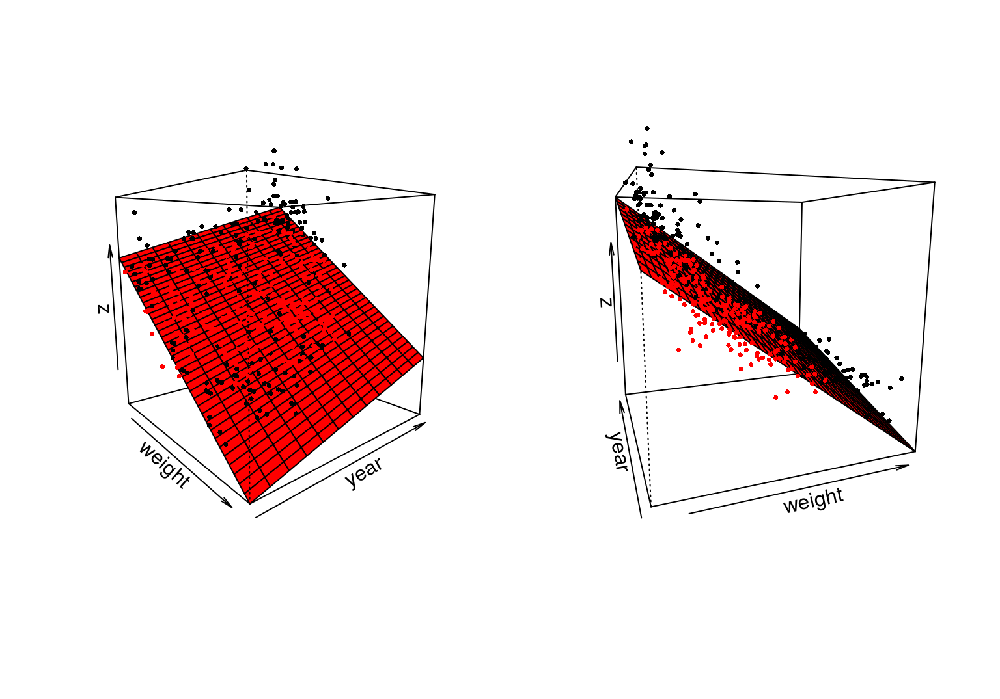
dat.grid <- expand.grid(weight=weight, year = year)
values <- predict(mod_1, dat.grid)
dat.grid$pred.mpg <- values
ggplot(dat.grid, aes(x=weight, y=pred.mpg)) +
facet_wrap(~year,nrow=2)+
geom_point(data=Auto, aes(x=weight, y=mpg),alpha=0.5)+
geom_line(colour='red',size=1.1) + geom_hline(yintercept=30, col='gray')
Por otro lado, si la estructura rígida de estos modelos describe aproximadamente el comportamiento de los datos, estos modelos nos pueden proteger contra sobreajustar los datos, es decir, incorporar en nuestra estimación de \(\hat{f}\) aspectos del error (\(\epsilon\)), lo que tiene como consecuencia también predicciones pobres.
Métodos no paramétricos
Los métodos no paramétricos suponen menos acerca de la forma funcional de \(f\), y su número de parámetros depende del tamaño de los datos que estamos considerando. Potencialmente, estos métodos pueden aproximar formas funcionales mucho más generales, pero típicamente requieren de más datos para obtener resultados razonables.
1.7.0.2 Ejemplo
En este ejemplo usamos regresión loess, que funciona haciendo promedios locales ponderados de puntos de entrenamiento cercanos a donde queremos hacer predicciones. La ponderación se hace en función de la distancia de los puntos de entrenamiento al punto donde queremos predecir.
mod_2 <- loess(mpg~year+weight, data=Auto, family='symmetric', degree=1,
span=0.15)
Auto$fit <- predict(mod_2)
weight <- seq(1600, 5200, by=100)
year <- seq(70,82, by=1)dat.grid <- expand.grid(weight = weight, year = year)
values <- predict(mod_2, dat.grid) %>% data.frame %>%
gather(year, value, year.70:year.82)
dat.grid$pred.mpg <- values$value
ggplot(dat.grid, aes(x=weight, y=pred.mpg)) +
facet_wrap(~year,nrow=2)+
geom_point(data=Auto, aes(x=weight, y=mpg),alpha=0.5)+
geom_line(colour='red',size=1.1) + geom_hline(yintercept=30, col='gray')
1.8 Resumen
Aprendizaje de máquina: algoritmos que aprenden de los datos para predecir cantidades numéricas, o clasificar (aprendizaje supervisado), o para encontrar estructura en los datos (aprendizaje no supervisado).
- En aprendizaje supervisado, el esquema general es:
- un algoritmo aprende de una muestra de entrenamiento \({\mathcal L}\), que es generada por el proceso generador de datos que nos interesa. Eso quiere decir que produce una función \(\hat{f}\) (a partir de \({\mathcal L}\)) que nos sirve para hacer predicciones \(x \to \hat{f}(x)\) de \(y\)
- El error de predicción del algoritmo es \(Err\), que mide en promedio qué tan lejos están las predicciones de valores reales.
- Para estimar esta cantidad usamos una muestra de prueba \({\mathcal T}\), que es independiente de \({\mathcal L}\).
Esta es porque nos interesa el desempeño futuro de \(\hat{f}\) para nuevos casos que el algoritmo no ha visto (esto es aprender).
El error en la muestra de entrenamiento no necesariamente es buen indicador del desempeño futuro de nuestro algoritmo.
Para obtener las mejores predicciones posibles, es necesario que el algoritmo sea capaz de capturar patrones en los datos, pero no tanto que tienda a absorber ruido en la estimación - es un balance de complejidad y rigidez. En términos estadísticos, se trata de un balance de varianza y sesgo.
Hay dos tipos de métodos generales: paramétricos y no paramétricos. Los paramétricos seleccionan un número finito de parámetros para construir \(\hat{f}\), el número de parámetros de los no paramétricos depende del conjunto de entrenamiento.
1.9 Tarea
En el ejemplo simple que vimos en la sección 1.5, utilizamos una sola muestra de entrenamiento para evaluar el algoritmo. ¿Será posible que escogimos una muestra atípica? - Corre el ejemplo con otra muestra y reporta tus resultados de error de entrenamiento y error de prueba para los tres métodos. - Opcional (difícil): evalúa los tres métodos comparando estos valores para un número grande de distintas simulaciones de los datos de entrenamiento.